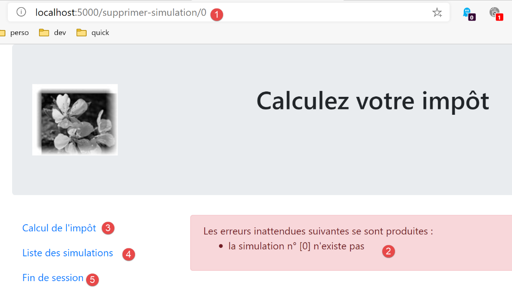
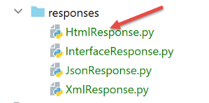
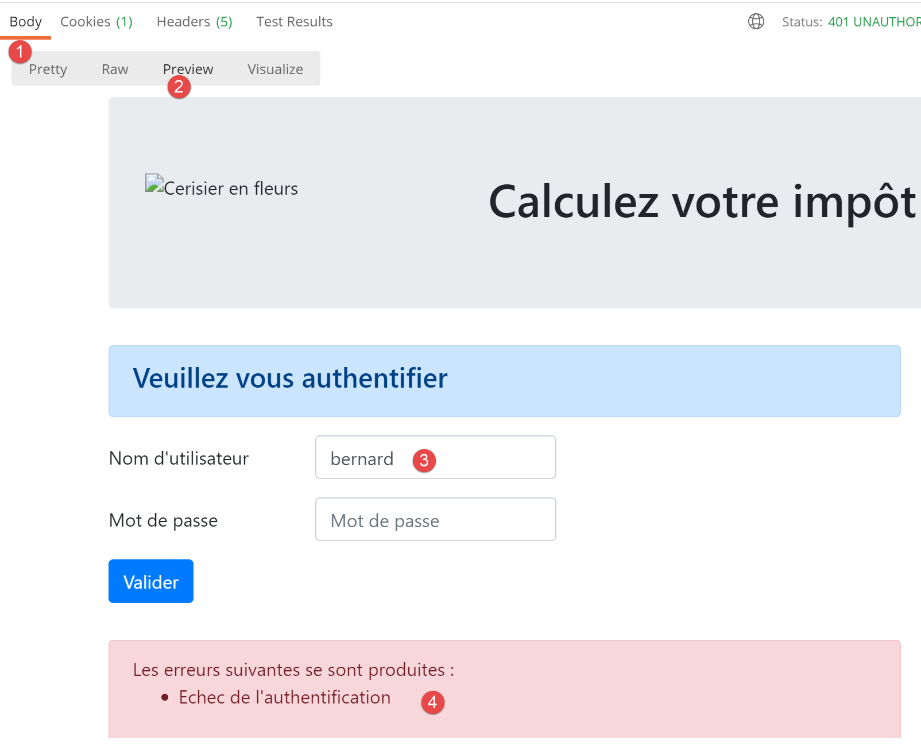
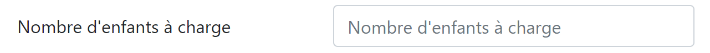
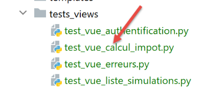
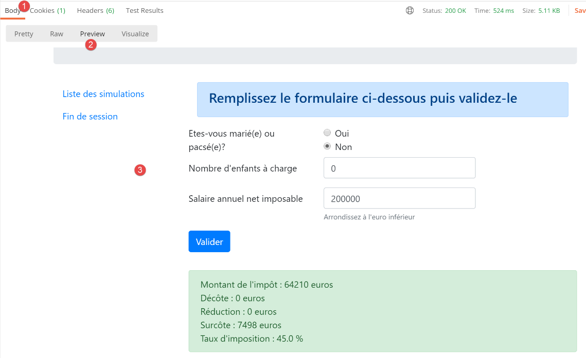
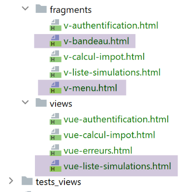
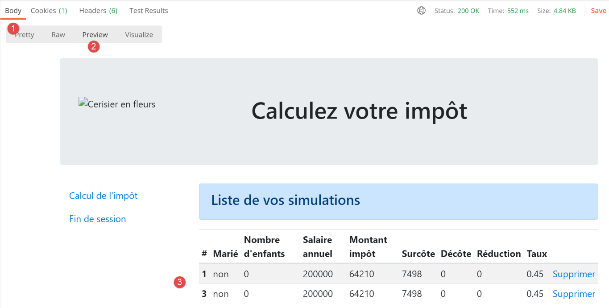
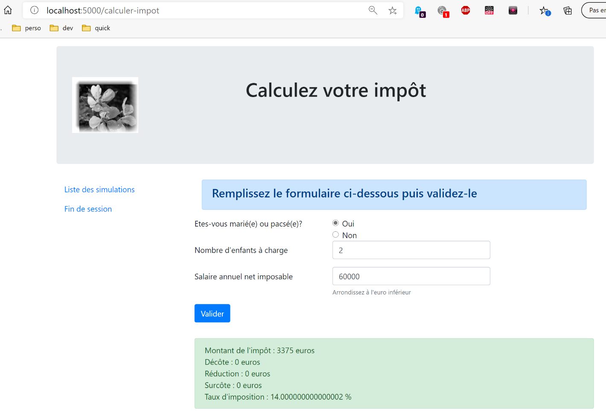

32. وضع HTML في الإصدار 12
كنا قد أشرنا في بداية الإصدار 12 إلى أننا سنقوم بتطوير التطبيق على عدة مراحل. كنا قد كتبنا:
- انطلاقًا من طرق عرض تطبيق HTML، سنحدد الإجراءات التي يجب أن ينفذها تطبيق الويب. سنستخدم هنا طرق العرض الفعلية، ولكن يمكن أن تكون مجرد طرق عرض على الورق؛
- انطلاقًا من هذه الإجراءات، سنحدد خدمات URL الخاصة بتطبيق HTML؛
- سنقوم بتنفيذ خدمات URL هذه باستخدام خادم يقدم jSON. وهذا يسمح بتحديد الهيكل الأساسي لخادم الويب دون الحاجة إلى الاهتمام بالصفحات HTML المراد تقديمها. سنقوم باختبار خدمات URL هذه باستخدام Postman؛
- ثم سنقوم باختبار خادمنا jSON باستخدام عميل وحدة التحكم؛
- وبمجرد التحقق من صحة الخادم jSON، سننتقل إلى كتابة التطبيق HTML؛
لدينا خادمان jSON و XML قيد التشغيل. يمكننا الآن الانتقال إلى الخادم HTML. وسنرى أن هذا الخادم يستخدم كامل البنية التي تم تطويرها لخادمي jSON و XML ويضيف إليهما إدارة العروض HTML.
32.1. البنية MVC
سنقوم بتنفيذ نموذج البنية المعروف باسم MVC (النموذج – العرض – وحدة التحكم) بالطريقة التالية:
ستتم معالجة طلب العميل على النحو التالي:
- 1 - الطلب
ستكون URL المطلوبة على شكل http://machine:port/action/param1/param2/… وسيستخدم [Contrôleur principal] ملف تكوين لـ "توجيه" الطلب إلى وحدة التحكم الصحيحة. ولذلك، سيستخدم الحقل [action] الموجود في URL. أما باقي أجزاء URL و[param1/param2/…] فهي تتكون من معلمات اختيارية سيتم تمريرها إلى الإجراء. الحرف C في MVC هو هنا السلسلة [Contrôleur principal, Contrôleur / Action]. إذا لم يتمكن أي وحدة تحكم من معالجة الإجراء المطلوب، فسيرد خادم الويب بأن URL المطلوب لم يتم العثور عليه.
- 2 - المعالجة
- يمكن للإجراء المختار [2a] الاستفادة من المعلمات parami التي أرسلها إليه الإجراء [Contrôleur principal]. ويمكن أن تأتي هذه المعلمات من مصدرين:
- المسار [/param1/param2/…] الخاص بـ URL،
- من المعلمات المرسلة في نص طلب العميل؛
- أثناء معالجة طلب المستخدم، قد تحتاج العملية إلى الطبقة [métier] [2b]. بمجرد معالجة طلب العميل، يمكن أن تستدعي هذه العملية استجابات متنوعة. ومن الأمثلة النموذجية على ذلك:
- استجابة خطأ إذا تعذر معالجة الطلب بشكل صحيح؛
- استجابة تأكيد في الحالات الأخرى؛
- سترسل [Contrôleur / Action] ردها [2c] إلى وحدة التحكم الرئيسية بالإضافة إلى رمز الحالة. وستمثل رموز الحالة هذه بشكل فريد الحالة التي يمر بها التطبيق. وسيكون هذا إما رمز نجاح أو رمز خطأ؛
- 3 - الرد
- حسب ما إذا كان العميل قد طلب استجابة jSON، أو XML أو HTML، سيقوم [Contrôleur principal] بإنشاء مثيل [3a] لنوع الرد المناسب وسيطلب منه إرسال الرد إلى العميل. وسيقوم [Contrôleur principal] بإرسال كل من الرد ورمز الحالة المقدمين من [Contrôleur / Action] الذي تم تنفيذه؛
- وإذا كان الرد المطلوب من النوع jSON أو XML، فسيقوم الرد المحدد بتنسيق الرد الوارد من [Contrôleur / Action] الذي تم تزويده به وإرساله إلى [3c]. يمكن أن يكون العميل القادر على استغلال هذه الإجابة عبارة عن برنامج نصي لـ Python على وحدة التحكم أو برنامج نصي لـ JavaScript مضمن في صفحة HTML؛
- إذا كانت الاستجابة المطلوبة من النوع HTML، فستقوم الاستجابة المحددة باختيار إحدى طرق العرض HTML أو [Vuei] باستخدام رمز الحالة الذي تم تزويدها به. وهذا هو العرض V الخاص بـ MVC. لكل رمز حالة عرض واحد فقط. سيقوم هذا العرض V بعرض استجابة [Contrôleur / Action] التي تم تنفيذها. وهي تقوم بتنسيق بيانات هذه الاستجابة باستخدام HTML وCSS وJavaScript. وتُسمى هذه البيانات «نموذج العرض». وهو الحرف M في MVC. وعادةً ما يكون العميل هو متصفح؛
32.2. هيكل شجرة البرامج النصية لخادم HTML

- في [1]، العناصر الثابتة للخادم HTML؛
- إلى [2-3]، وهي طرق العرض V الخاصة بالخادم HTML. الأجزاء [2] هي عناصر قابلة لإعادة الاستخدام في طرق العرض [3]؛
- في [4]، مجلد سيُستخدم لاختبار طرق العرض بشكل ثابت؛
- في [5]، مجلد نماذج M لعروض V، وهو M الخاص بـ MVC؛
32.3. عرض الصفحات
يستخدم تطبيق الويب HTML أربع طرق عرض. الطريقة الأولى هي طريقة عرض المصادقة:
- الإجراء الذي يؤدي إلى هذه الواجهة الأولى هو الإجراء [/init-session] [1]؛
- يؤدي النقر على الزر [Valider] إلى تشغيل الإجراء [/authentifier-utilisateur] مع معلمتين مرسلتين [2-3]؛
عرض حساب الضريبة:

- في [1]، الإجراء [/authentifier-utilisateur] الذي يعرض هذه الصفحة؛
- في [2]، يؤدي النقر على الزر [Valider] إلى تشغيل الإجراء [/calculer-impot] مع ثلاث معلمات مرسلة [2-5]؛
- يؤدي النقر على الرابط [6] إلى تشغيل الإجراء [/lister-simulations] بدون معلمات؛
- يؤدي النقر على الرابط [7] إلى تشغيل الإجراء [/fin-session] بدون معلمات؛
الطريقة الثالثة هي تلك الخاصة بالمحاكاة التي يقوم بها المستخدم المصادق عليه:

- في [1]، الإجراء [/lister-simulations] الذي يؤدي إلى هذه الشاشة؛
- في [2]، يؤدي النقر على الرابط [Supprimer] إلى تشغيل الإجراء [/supprimer-simulation] مع معلمة واحدة، وهي رقم المحاكاة المراد حذفها من القائمة؛
- النقر على الرابط [3] يؤدي إلى تشغيل الإجراء [/afficher-calcul-impot] بدون معلمات، والذي يعيد عرض شاشة حساب الضريبة؛
- النقر على الرابط [4] يؤدي إلى تشغيل الإجراء [/fin-session] بدون معلمات؛
سيُطلق على العرض الرابع اسم «عرض الأخطاء غير المتوقعة»:
- في [1]: قام المستخدم بنفسه بكتابة URL. لكن في هذا المثال لم تكن هناك محاكاة. وبالتالي نتلقى رسالة الخطأ [2]. نحن على دراية بهذه الرسالة. فقد ظهرت من قبل في jSON / XML. سنسمي هذا النوع من الأخطاء «خطأ غير متوقع»، لأنه لا يمكن أن يحدث أثناء الاستخدام العادي للتطبيق. ولا تحدث هذه الأخطاء إلا عندما يقوم المستخدم بنفسه بكتابة URL؛

- في حالة حدوث خطأ غير متوقع، تتيح الروابط [3-5] العودة إلى إحدى العروض الثلاثة الأخرى؛
دعونا نستعرض خدمات الخادم المختلفة URL / jSON / XML:
الإجراء | الدور | سياق التنفيذ |
/init-session | يُستخدم لتحديد نوع (json، xml، html) الردود المطلوبة | الطلب GET يمكن إرساله في أي وقت |
/authentifier-utilisateur | يسمح أو يمنع المستخدم من تسجيل الدخول | الطلب POST. يجب أن تحتوي الطلب على معلمتين مرسلتين [user, password] لا يمكن إصدارها إلا إذا كان نوع الجلسة (json، xml، html) معروفًا |
/حساب-الضريبة | يقوم بمحاكاة حساب الضريبة | الطلب POST. يجب أن تحتوي الطلب على ثلاثة معلمات مرسلة عبر البوست [marié, enfants, salaire] لا يمكن إصدارها إلا إذا كان نوع الجلسة (json، xml، html) معروفًا وكان المستخدم قد تمت مصادقته |
/lister-simulations | طلب عرض قائمة عمليات المحاكاة التي تم إجراؤها منذ بداية الجلسة | الطلب GET. لا يمكن إرسالها إلا إذا كان نوع الجلسة (json، xml، html) معروفًا وكان المستخدم قد تم توثيقه |
/supprimer-simulation/numéro | حذف محاكاة من قائمة المحاكاة | الطلب GET. لا يمكن إرسالها إلا إذا كان نوع الجلسة (json، xml، html) معروفًا وكان المستخدم قد تم توثيقه |
/عرض-حساب-الضريبة | يعرض الصفحة HTML الخاصة بحساب الضريبة | الاستعلام GET. لا يمكن إرسالها إلا إذا كان نوع الجلسة (json، xml، html) معروفًا وكان المستخدم قد أتم المصادقة |
/fin-session | ينهي جلسة المحاكاة. | من الناحية الفنية، يتم حذف الجلسة القديمة على الويب وإنشاء جلسة جديدة لا يمكن إصدارها إلا إذا كان نوع الجلسة (json، xml، html) معروفًا وكان المستخدم قد تم توثيقه |
سيتم استخدام أوامر الخدمة المختلفة هذه (URL) أيضًا مع الخادم HTML.
32.4. تكوين طرق العرض
تتم معالجة الإجراء بواسطة وحدة تحكم. وتُرجع وحدة التحكم هذه توبلة (النتيجة، status_code) حيث:
- [résultat] هو قاموس من المفاتيح [action, état, réponse]؛
- [status_code] هو رمز حالة الاستجابة HTTP التي سيتم إرسالها إلى العميل؛
في الجلسة HTML، تعتمد الصفحة التي يتم عرضها عقب إجراء ما على رمز الحالة الذي يقدمه وحدة التحكم. ويتجسد هذا الارتباط في التكوين [config] على النحو التالي:
# تعتمد طرق العرض HTML ونماذجها على الحالة التي يعرضها وحدة التحكم
"views": [
{
# صفحة المصادقة
"états": [
# نجاح /init-session
700,
# فشل /توثيق-المستخدم
201
],
"view_name": "views/vue-authentification.html",
"model_for_view": ModelForAuthentificationView()
},
{
# عرض حساب الضريبة
"états": [
# /نجاح مصادقة المستخدم
200,
# /حساب-الضريبة نجح
300,
# /حساب-الضريبة فشل
301,
# /عرض-حساب-الضريبة
800
],
"view_name": "views/vue-calcul-impot.html",
"model_for_view": ModelForCalculImpotView()
},
{
# عرض قائمة عمليات المحاكاة
"états": [
# /عرض-قائمة-المحاكاة
500,
# /حذف-المحاكاة
600
],
"view_name": "views/vue-liste-simulations.html",
"model_for_view": ModelForListeSimulationsView()
}
],
# عرض الأخطاء غير المتوقعة
"view-erreurs": {
"view_name": "views/vue-erreurs.html",
"model_for_view": ModelForErreursView()
},
# عمليات إعادة التوجيه
"redirections": [
{
"états": [
400, # /إنهاء-الجلسة بنجاح
],
# إعادة التوجيه إلى
"to": "/init-session/html",
}
],
}
- السطر 2-40: [views] هي قائمة بالعروض. لننظر إلى العرض في الأسطر 3-13:
- السطر 11: العرض V المعروض؛
- السطر 12: مثيل الفئة المسؤول عن إنشاء النموذج M لهذا العرض؛
- الأسطر 5-10: الحالات التي تؤدي إلى هذه العرضة؛
- الأسطر 3-13: عرض المصادقة؛
- الأسطر 14-28: عرض حساب الضريبة؛
- الأسطر 29-39: عرض قائمة عمليات المحاكاة؛
- الأسطر 42-46: عرض الأخطاء غير المتوقعة؛
- الأسطر 49-57: تؤدي بعض الحالات إلى عرض ما عن طريق إعادة التوجيه. وهذا هو الحال بالنسبة للحالة 400، وهي حالة نجاح الإجراء [/fin-session]. لذا، يجب إعادة توجيه العميل إلى الإجراء [http://machine:port/chemin/init-session/html]؛
نقدم الآن العروض المختلفة.
32.5. صفحة المصادقة

32.5.1. عرض الصفحة
تبدو شاشة المصادقة كما يلي:

يتكون العرض من عنصرين نسميهما «شظايا»:
- يتم إنشاء الجزء [1] بواسطة الجزء [v-bandeau.html]؛
- يتم إنشاء الجزء [2] بواسطة الجزء [v-authentification.html]؛
يتم إنشاء صفحة المصادقة بواسطة الصفحة التالية [vue-authentification.html]:
<!-- المستند HTML -->
<!doctype html>
<html lang="fr">
<head>
<!-- علامات meta المطلوبة -->
<meta charset="utf-8">
<meta name="viewport" content="width=device-width, initial-scale=1, shrink-to-fit=no">
<!-- Bootstrap CSS -->
<link rel="stylesheet" href="https://maxcdn.bootstrapcdn.com/bootstrap/4.4.1/css/bootstrap.min.css">
<title>Application impôts</title>
</head>
<body>
<div class="container">
<!-- شريط رأس الصفحة -->
{% include "fragments/v-bandeau.html" %}
<!-- سطر من عمودين -->
<div class="row">
<div class="col-md-9">
{% include "fragments/v-authentification.html" %}
</div>
</div>
<!-- في حالة وجود خطأ - يتم عرض تنبيه بالخطأ -->
{% if modèle.error %}
<div class="row">
<div class="col-md-9">
<div class="alert alert-danger" role="alert">
Les erreurs suivantes se sont produites :
<ul>{{modèle.erreurs|safe}}</ul>
</div>
</div>
</div>
{% endif %}
</div>
</body>
</html>
تعليقات
- السطر 2: يبدأ المستند HTML بهذا السطر؛
- الأسطر 3-36: الصفحة HTML مغلفة بعلامتي <html> </html>؛
- الأسطر 4-11: رأس (head) المستند HTML؛
- السطر 6: تشير علامة <meta charset> هنا إلى أن المستند مكتوب بترميز UTF-8؛
- السطر 7: تحدد العلامة <meta name=’viewport’> العرض الأولي للمنظر: على كامل عرض الشاشة التي تعرضه (width) بحجمه الأصلي (initial-scale) دون تغيير الحجم للتكيف مع شاشة أصغر (shrink-to-fit)؛
- السطر 9: تحدد العلامة <link rel=’stylesheet’> الملف CSS الذي يتحكم في مظهر العرض. نستخدم هنا إطار العمل Bootstrap 4.4.1 [https://getbootstrap.com/docs/4.0/getting-started/introduction/] ؛
- السطر 10: تحدد العلامة <title> عنوان الصفحة:

- الأسطر 13-35: يتم تغليف نص الصفحة الإلكترونية بين العلامتين <body></body>؛
- الأسطر 14-34: تحدد العلامة <div> قسمًا من الصفحة المعروضة. تشير جميع السمات [class] المستخدمة في العرض إلى إطار عمل Bootstrap CSS. تحدد العلامة <div class=’container’> (السطر 14) حاوية Bootstrap؛
- السطر 26: يتم تضمين المقتطف [v-bandeau.html]. يُنشئ هذا المقتطف الشريط العلوي [1] للصفحة. سنشرحه لاحقًا؛
- الأسطر 18-22: تحدد العلامة <div class=’row’> صفًا في Bootstrap. تتكون هذه الصفوف من 12 عمودًا؛
- السطر 19: تحدد العلامة <div class=’col-md-9’> قسمًا مكونًا من 9 أعمدة؛
- السطر 20: يتم تضمين المقطع [v-authentification.html] الذي يعرض نموذج المصادقة [2] الخاص بالصفحة. سنشرح ذلك لاحقًا؛
- الأسطر 24-33: لا يُستخدم الرمز HTML الموجود في هذه الأسطر إلا إذا كانت قيمة [modèle.error] هي True. وسنتبع هذا الأسلوب دائمًا: سيتم تغليف نموذج عرض HTML في قاموس [modèle]؛
- الأسطر 24-33: تفشل عملية المصادقة إذا أدخل المستخدم بيانات اعتماد غير صحيحة. في هذه الحالة، يتم إعادة عرض شاشة المصادقة مع رسالة خطأ. ويحدد السمة [modèle.error] ما إذا كان يجب عرض رسالة الخطأ هذه أم لا؛
- الأسطر 27-30: تحدد منطقة ذات خلفية وردية (class="alert alert-danger") (السطر 27)؛

- السطر 28: نص؛
- السطر 29: العلامة HTML <ul> (قائمة غير مرتبة) تعرض قائمة ذات نقاط. يجب أن يكون لكل عنصر في القائمة الصيغة <li>عنصر</li>. يتم هنا عرض قيمة [modèle.erreurs]. يتم تصفية هذه القيمة (وجود |) بواسطة مرشح [safe]. بشكل افتراضي، عندما يتعين إرسال سلسلة أحرف إلى المتصفح، يقوم Flask بـ«تحييد» جميع العلامات HTML التي قد توجد فيها حتى لا يفسرها المتصفح. لكن في بعض الأحيان نرغب في تفسيرها. وسيكون هذا هو الحال هنا عندما تحتوي السلسلة [modèle.erreurs] على علامات HTML <li> و</li> التي تُستخدم لتحديد عنصر من القائمة. في هذه الحالة، نستخدم المرشح [safe] الذي يُخبر Flask أن السلسلة المراد عرضها آمنة (safe) وبالتالي لا يجب عليه تعطيل العلامات HTML التي سيجدها فيها؛
دعونا نستخلص من هذا الكود العناصر الديناميكية التي يجب تعريفها:
- [modèle.error]: لعرض رسالة خطأ؛
- [modèle.erreurs]: قائمة (بالمعنى المقصود بالمصطلح) برسائل الخطأ؛
32.5.2. المقطع [v-bandeau.html]
يعرض الجزء [v-bandeau.html] الشريط العلوي لجميع طرق عرض تطبيق الويب:

كود الجزء [v-bandeau.html] هو كما يلي:
<!-- جومبوترون بوتستراب -->
<div class="jumbotron">
<div class="row">
<div class="col-md-4">
<img src="{{ url_for('static', filename='images/logo.jpg') }}" alt="Cerisier en fleurs"/>
</div>
<div class="col-md-8">
<h1>
Calculez votre impôt
</h1>
</div>
</div>
</div>
تعليقات
- الأسطر 2-13: الشريط العلوي مغلف في قسم Bootstrap من نوع Jumbotron [<div class="jumbotron">]. تعمل فئة Bootstrap هذه على تصميم المحتوى المعروض بطريقة خاصة لإبرازه؛
- الأسطر 3-12: سطر Bootstrap؛
- الأسطر 4-6: صورة [img] موضوعة في الأعمدة الأربعة الأولى من السطر؛
- السطر 5: الصيغة:
تستخدم دالة [url_for] من Flask. هنا، ستكون قيمتها هي URL من الملف [images/logo.pg] الموجود في المجلد [static]؛
- الأسطر 7-11: ستُستخدم الأعمدة الثمانية الأخرى في السطر (نذكر أن العدد الإجمالي هو 12 عمودًا) لوضع نص (السطر 9) بخط كبير (<h1>، الأسطر 8-10)؛
32.5.3. المقتطف [v-authentification.html]
يعرض المقتطف [v-authentification.html] نموذج المصادقة الخاص بالتطبيق الويب:

كود المقطع [v-authentification.html] هو كما يلي:
<!-- نموذج HTML - يتم إرسال قيمه باستخدام الإجراء [authentifier-utilisateur] -->
<form method="post" action="/authentifier-utilisateur">
<!-- العنوان -->
<div class="alert alert-primary" role="alert">
<h4>Veuillez vous authentifier</h4>
</div>
<!-- نموذج Bootstrap -->
<fieldset class="form-group">
<!-- السطر الأول -->
<div class="form-group row">
<!-- العبارة -->
<label for="user" class="col-md-3 col-form-label">Nom d'utilisateur</label>
<div class="col-md-4">
<!-- حقل إدخال النص -->
<input type="text" class="form-control" id="user" name="user"
placeholder="Nom d'utilisateur" value="{{ modèle.login }}" required>
</div>
</div>
<!-- السطر الثاني -->
<div class="form-group row">
<!-- العنوان -->
<label for="password" class="col-md-3 col-form-label">Mot de passe</label>
<!-- منطقة إدخال النص -->
<div class="col-md-4">
<input type="password" class="form-control" id="password" name="password"
placeholder="Mot de passe" required>
</div>
</div>
<!-- زر من النوع [submit] في السطر الثالث -->
<div class="form-group row">
<div class="col-md-2">
<button type="submit" class="btn btn-primary">Valider</button>
</div>
</div>
</fieldset>
</form>
تعليقات
- السطور 2-39: تحدد علامة <form> نموذج HTML. ويتميز هذا النموذج عمومًا بالخصائص التالية:
- يحدد حقول الإدخال (علامات <input> في السطرين 17 و27؛
- يحتوي على زر من النوع [submit] (السطر 34) الذي يرسل القيم المدخلة إلى URL المشار إليه في السمة [action] لعلامة [form] (السطر 2). يتم تحديد الطريقة HTTP المستخدمة لاستدعاء هذا العنصر URL في السمة [method] لعلامة [form] (السطر 2)؛
- هنا، عندما ينقر المستخدم على الزر [Valider] (السطر 34)، سيقوم المتصفح بإرسال (السطر 2) القيم التي تم إدخالها في النموذج إلى URL [/authentifier-utilisateur] (السطر 2)؛
- القيم المرسلة هي القيم التي أدخلها المستخدم في حقول الإدخال في السطرين 17 و27. وسيتم إرسالها في نص الطلب HTTP الذي سيقوم المتصفح بإرساله بالشكل [x-www-forl-urlencoded]. أسماء معلمات [user, password] هي أسماء سمات [name] لحقول الإدخال في السطرين 17 و27؛
- السطور 5-7: قسم Bootstrap لعرض عنوان على خلفية زرقاء:
- السطور 10-37: نموذج Bootstrap. سيتم عندئذٍ تصميم جميع عناصر النموذج بطريقة معينة؛

- الأسطر 12-20: تحدد السطر الأول من Bootstrap في النموذج:

- يحدد السطر 14 العنوان [1] على ثلاثة أعمدة. السمة [for] لعلامة [label] تربط العنوان بالسمة [id] لحقل الإدخال في السطر 17؛
- الأسطر 15-19: تضع حقل الإدخال في مجموعة مكونة من أربعة أعمدة؛
- السطور 17-18: العلامة HTML [input] تصف حقل إدخال. ولها عدة معلمات:
- [type=’text’]: هي منطقة إدخال نصية. يمكن كتابة أي شيء فيها؛
- [class=’form-control’]: نمط Bootstrap لمنطقة الإدخال؛
- [id=’user’]: معرّف حقل الإدخال. يُستخدم هذا المعرّف عادةً بواسطة CSS ورمز جافا سكريبت؛
- [name=’user’]: اسم حقل الإدخال. سيتم إرسال القيمة التي أدخلها المستخدم عبر المتصفح تحت هذا الاسم [user=xx]؛
- [placeholder=’invite’]: النص المعروض في حقل الإدخال عندما لا يكون المستخدم قد أدخل أي شيء بعد؛

- (تابع)
- [value=’valeur’]: سيتم عرض النص «القيمة» في حقل الإدخال بمجرد ظهوره، أي قبل أن يقوم المستخدم بإدخال أي شيء آخر. تُستخدم هذه الآلية في حالة حدوث خطأ لعرض الإدخال الذي تسبب في الخطأ. وهنا ستكون هذه القيمة هي قيمة المتغير [modèle.login]؛
- [required]: يتطلب من المستخدم إدخال قيمة حتى يمكن إرسال النموذج إلى الخادم:
- الأسطر 21-30: كود مشابه لإدخال كلمة المرور؛
- السطر 27: [type=’password’] يؤدي إلى ظهور حقل إدخال نص (يمكن كتابة أي شيء فيه) لكن الأحرف المكتوبة تظل مخفية:

- الأسطر 32-36: سطر ثالث من Bootstrap للزر [Valider]؛
- السطر 34: نظرًا لوجود السمة [type=submit]، فإن النقر على هذا الزر يؤدي إلى قيام المتصفح بإرسال القيم التي تم إدخالها إلى الخادم كما تم شرحه سابقًا. السمة CSS [class="btn btn-primary"] تعرض زرًا أزرق:

يبقى لنا شرح أمر أخير. في السطر 2، تحدد السمة [action="/authentifier-utilisateur"] قيمة URL غير مكتملة (فهي لا تبدأ بـ http://machine:port/chemin). في مثالنا، جميع عناصر URL في التطبيق تأتي بالصيغة [http://machine:port/chemin/action/param1/param2/..]، حيث [http://machine:port/chemin] هو الجذر لعناصر URL الخاصة بالخدمة. في [action="/authentifier-utilisateur"]، لدينا URL مطلق، أي يُقاس انطلاقًا من جذر URL. وبالتالي، فإن القيمة «URL» المكملة لـ «POST» هي «[http://machine:port/chemin/authentifier-utilisateur]»، وهذا هو ما سيستخدمه المتصفح.
تجدر الإشارة إلى أن هذا المقتطف يستخدم النموذج [modèle.login].
32.5.4. الاختبارات البصرية
يمكن إجراء اختبارات على العروض قبل وقت طويل من دمجها في التطبيق. ويتعلق الأمر هنا باختبار مظهرها البصري. سنجمع جميع عروض الاختبار في المجلد [tests_views] التابع للمشروع:

لاختبار العرض V [vue-authentification.html]، يتعين علينا إنشاء نموذج البيانات M الذي سيعرضه. ونقوم بذلك باستخدام البرنامج النصي [test_vue_authentification.py]:
from flask import Flask, render_template, make_response
# تطبيق Flask
app = Flask(__name__, template_folder="../templates", static_folder="../static")
# الصفحة الرئيسية URL
@app.route('/')
def index():
# تغليف بيانات الصفحة في قالب
modèle = {}
# معرف المستخدم
modèle["login"] = "albert"
# قائمة الأخطاء
modèle["error"] = True
erreurs = ["erreur1", "erreur2"]
# يتم إنشاء قائمة HTML بالأخطاء
content = ""
for erreur in erreurs:
content += f"<li>{erreur}</li>"
modèle["erreurs"] = content
# عرض الصفحة
return make_response(render_template("views/vue-authentification.html", modèle=modèle))
# الصفحة الرئيسية
if __name__ == '__main__':
app.config.update(ENV="development", DEBUG=True)
app.run()
تعليقات
- الأسطر 1-3: نقوم بإنشاء تطبيق Flask الذي يهدف فقط إلى عرض العرض [vue-authentification.html] (السطر 22)؛
- السطر 7: يحتوي التطبيق على خدمة واحدة فقط هي URL؛
- الأسطر 9-20: تحتوي طريقة العرض الخاصة بالمصادقة على أجزاء ديناميكية يتحكم فيها الكائن [modèle]. يُطلق على هذا الكائن اسم نموذج العرض. وفقًا لأحد التعريفين المقدمين للاختصار MVC، فإننا هنا أمام الحرف M من MVC. عند تعريف العرض [vue-authentification.html]، حددنا ثلاث قيم ديناميكية:
- [modèle.error]: قيمة منطقية تشير إلى ما إذا كان يجب عرض رسالة خطأ؛
- [modèle.erreurs]: قائمة HTML من رسائل الخطأ؛
- [modèle.login]: اسم تسجيل دخول المستخدم؛
لذلك يتعين علينا تعريف هذه القيم الديناميكية الثلاثة.
- الأسطر 9-20: نحدد العناصر الديناميكية الثلاثة لصفحة المصادقة؛
لإجراء الاختبار، نقوم بتشغيل البرنامج النصي [tests_views/test_vue_authentification.py] ونطلب URL و[/localhost:5000/]:
نواصل إجراء هذه الاختبارات المرئية حتى نكون راضين عن النتيجة.

32.5.5. حساب نموذج العرض
بمجرد تحديد الشكل المرئي للعرض، يمكننا المضي قدمًا في حساب نموذج العرض في الظروف الفعلية. سيتم إنشاء نماذج العروض بواسطة فئات مجمعة في المجلد [models_for_views]:

وستلتزم كل فئة تُنشئ نموذج عرض بالواجهة التالية [InterfaceModelForView]:
from abc import ABC, abstractmethod
from flask import Request
from werkzeug.local import LocalProxy
class InterfaceModelForView(ABC):
@abstractmethod
def get_model_for_view(self, request: Request, session: LocalProxy, config: dict, résultat: dict) -> dict:
pass
- الأسطر 8-10: تتولى الطريقة [get_model_for_view] إنتاج قالب عرض مغلف في قاموس. وتتلقى لهذا الغرض المعلومات التالية:
- [request, session, config] هي نفس المعلمات التي يستخدمها وحدة التحكم الخاصة بالإجراء. وبالتالي، يتم تمريرها أيضًا إلى النموذج؛
- أنتجت وحدة التحكم نتيجة [résultat] التي يتم إرسالها أيضًا إلى النموذج. تحتوي هذه النتيجة على عنصر مهم [état] يشير إلى كيفية سير تنفيذ الإجراء الجاري. سيستخدم النموذج هذه المعلومات؛
لقد رأينا أنه في تكوين التطبيق [config]، تُستخدم رموز الحالة التي تُرجعها وحدات التحكم لتحديد العرض HTML المطلوب عرضه:
# تعتمد طرق العرض HTML ونماذجها على الحالة التي يعرضها وحدة التحكم
"views": [
{
# عرض المصادقة
"états": [
# نجاح /init-session
700,
# فشل عملية /authentifier-utilisateur
201
],
"view_name": "views/vue-authentification.html",
"model_for_view": ModelForAuthentificationView()
},
{
# عرض حساب الضريبة
"états": [
# /نجاح مصادقة المستخدم
200,
# /حساب-الضريبة نجح
300,
# /حساب-الضريبة فشل
301,
# /عرض-حساب-الضريبة
800
],
"view_name": "views/vue-calcul-impot.html",
"model_for_view": ModelForCalculImpotView()
},
{
# عرض قائمة عمليات المحاكاة
"états": [
# /عرض-قائمة-المحاكاة
500,
# /حذف-المحاكاة
600
],
"view_name": "views/vue-liste-simulations.html",
"model_for_view": ModelForListeSimulationsView()
}
],
# عرض الأخطاء غير المتوقعة
"view-erreurs": {
"view_name": "views/vue-erreurs.html",
"model_for_view": ModelForErreursView()
},
# عمليات إعادة التوجيه
"redirections": [
{
"états": [
400, # /إنهاء-الجلسة بنجاح
],
# إعادة التوجيه إلى
"to": "/init-session/html",
}
],
}
وبالتالي، فإن رموز الحالة [700, 201] (السطران 7 و9) هي التي تؤدي إلى عرض واجهة المصادقة. ولمعرفة معنى هذه الرموز، يمكن الاستعانة باختبارات [Postman] التي أُجريت على التطبيق jSON:
- [init-session-json-700]: 700 هو رمز الحالة بعد نجاح إجراء [init-session]: وعندها يتم عرض نموذج المصادقة فارغًا؛
- [authentifier-utilisateur-201]: 201 هو رمز الحالة عند فشل إجراء [authentifier-utilisateur] (بيانات اعتماد غير معترف بها): عندها يتم عرض نموذج المصادقة لتصحيحه؛
والآن بعد أن عرفنا متى يجب عرض نموذج المصادقة، يمكننا حساب نموذجه في [ModelForAuthentificationView] (السطر 12):
from flask import Request
from werkzeug.local import LocalProxy
from InterfaceModelForView import InterfaceModelForView
class ModelForAuthentificationView(InterfaceModelForView):
def get_model_for_view(self, request: Request, session: LocalProxy, config: dict, résultat: dict) -> dict:
# تغليف بيانات الصفحة في القالب
modèle = {}
# حالة التطبيق
état = résultat["état"]
# يعتمد النموذج على الحالة
if état == 700:
# في حالة عرض النموذج فارغًا
modèle["login"] = ""
# لا توجد أخطاء لعرضها
modèle["error"] = False
elif état == 201:
# خطأ في المصادقة
# يتم إعادة عرض المستخدم الذي تم إدخاله في البداية
modèle["login"] = request.form.get("user")
# هناك خطأ يجب عرضه
modèle["error"] = True
# قائمة HTML برسائل الخطأ
erreurs = ""
for erreur in résultat["réponse"]:
erreurs += f"<li>{erreur}</li>"
modèle["erreurs"] = erreurs
# يتم عرض القالب
return modèle
تعليقات
- السطر 8: يجب أن توفر الطريقة [get_model_for_view] الخاصة بعرض المصادقة قاموسًا يحتوي على ثلاث مفاتيح [error, erreurs, login]. يتم هذا الحساب بناءً على رمز الحالة الذي أرجعته وحدة التحكم الخاصة بالإجراء؛
- السطر 12: يتم استرداد رمز الحالة الذي أرجعته وحدة التحكم التي عالجت الإجراء الجاري؛
- الأسطر 14-29: يعتمد النموذج على رمز الحالة هذا؛
- الأسطر 15-18: الحالة التي يتعين فيها عرض نموذج مصادقة فارغ؛
- الأسطر 20-29: حالة المصادقة الخاطئة: يتم عرض المعرف الذي أدخله المستخدم وعرض رسالة خطأ. يمكن للمستخدم عندئذٍ إعادة المحاولة بإدخال معرف آخر؛
- السطر 22: يمكن العثور على اسم المستخدم الذي أدخله المستخدم في البداية في طلب العميل؛
- السطر 24: يتم الإبلاغ عن وجود أخطاء يجب عرضها؛
- الأسطر 26-29: في حالة وجود خطأ، تحتوي النتيجة [‘réponse’] على قائمة بالأخطاء؛
32.5.6. إنشاء الردود HTML
لنعد إلى النموذج MVC الخاص بالتطبيق HTML:
- في 2 (2a، 2b): يقوم وحدة التحكم بتنفيذ إجراء؛
- في 3 (3a، 3b، 3c): يتم اختيار عرض وإرساله إلى العميل؛
في [3a]، يتم اختيار نوع من الاستجابات (jSON، XML، HTML). لقد رأينا كيف تم إنشاء الردود jSON و XML، ولكننا لم نتطرق بعد إلى الردود HTML. يتم إنشاء هذه الردود بواسطة الفئة [HtmlResponse]:

دعونا نذكر كيف يتم تحديد نوع الرد الذي يجب تقديمه للمستخدم في البرنامج النصي الرئيسي [main]:
….
# يتم إنشاء الرد المراد إرساله
response_builder = config["responses"][type_response]
response, status_code = response_builder \
.build_http_response(request, session, config, status_code, résultat)
# إرسال الرد
return response, status_code
حيث، في السطر 3، config[‘responses’] هو القاموس التالي:
# أنواع الردود المختلفة (json، xml، html)
"responses": {
"json": JsonResponse(),
"html": HtmlResponse(),
"xml": XmlResponse()
},
وبالتالي، فإن الفئة [HtmlResponse] هي التي تولد الرد HTML. ورمزها هو كما يلي:
# قاموس الردود HTML وفقًا للحالة الواردة في النتيجة
from flask import make_response, render_template
from flask.wrappers import Response
from werkzeug.local import LocalProxy
from InterfaceResponse import InterfaceResponse
class HtmlResponse(InterfaceResponse):
def build_http_response(self, request: LocalProxy, session: LocalProxy, config: dict, status_code: int,
résultat: dict) -> (Response, int):
# الاستجابة HTML تعتمد على رمز الحالة الذي يقدمه وحدة التحكم
état = résultat["état"]
# هل يجب إجراء إعادة توجيه؟
for redirection in config["redirections"]:
# الحالات التي تتطلب إعادة توجيه
états = redirection["états"]
if état in états:
# يجب إجراء إعادة توجيه
return redirect(f"/{redirection['to']}"), status.HTTP_302_FOUND
# لكل حالة، هناك عرض مطابق
# نبحث عنها في قائمة العروض
views_configs = config["views"]
trouvé = False
i = 0
# يتم تصفح قائمة العروض
nb_views = len(views_configs)
while not trouvé and i < nb_views:
# العرض رقم i
view_config = views_configs[i]
# التقارير المرتبطة بالعرض رقم i
états = view_config["états"]
# هل توجد الحالة المطلوبة ضمن الحالات المرتبطة بالعرض رقم i
if état in états:
trouvé = True
else:
# العرض التالي
i += 1
# هل تم العثور عليه؟
if not trouvé:
# إذا لم تكن هناك أي عرض للحالة الحالية للتطبيق
# يتم عرض صفحة الأخطاء
view_config = config["view-erreurs"]
# يتم حساب قالب العرض المطلوب عرضه
model_for_view = view_config["model_for_view"]
modèle = model_for_view.get_model_for_view(request, session, config, résultat)
# يتم إنشاء كود الاستجابة HTML
html = render_template(view_config["view_name"], modèle=modèle)
# يتم إنشاء الرد HTTP
response = make_response(html)
response.headers['Content-Type'] = 'text/html; charset=utf-8'
# يتم عرض النتيجة
return response, status_code
- السطر 11: تتلقى الطريقة [build_http_response] المسؤولة عن إنشاء الاستجابة HTML المعلمات التالية:
- [request, session, dict]: هذه هي المعلمات التي يستخدمها وحدة التحكم لمعالجة الإجراء الجاري؛
- [status_code, résultat] هما النتيجتان اللتان تنتجهما وحدة التحكم نفسها؛
- السطر 14: كما ذكرنا سابقًا، تعتمد استجابة الخادم HTML على رمز الحالة الموجود في القاموس [résultat]؛
- الأسطر 16-22: يتم أولاً معالجة عمليات إعادة التوجيه. في الوقت الحالي، سنتجاهل هذه الحالة إلى أن نواجه مثالاً على إعادة التوجيه. تجدر الإشارة إلى أن عمليات إعادة التوجيه تُعد عادةً حالة استخدام لخادم HTML. لا نواجه هذه الحالة مع الخوادم jSON و ouXML؛
- الأسطر 24-41: نبحث بين العروض عن تلك التي تحتوي قائمة [états] الخاصة بها على الحالة المطلوبة؛
- الأسطر 42-46: إذا لم يتم العثور على أي عرض، فهذا يعتبر خطأً غير متوقع. لنأخذ مثالاً. في التشغيل العادي للتطبيق، لا يجب أن تتعطل الإجراء [/supprimer-simulation] أبدًا. في الواقع، سنرى أن عملية حذف المحاكاة هذه تتم من خلال روابط تم إنشاؤها بواسطة الكود. هذه الروابط صحيحة ولا يمكن أن تؤدي إلى حدوث خطأ. ومع ذلك، كما رأينا، يمكن للمستخدم كتابة URL و[/supprimer-simulation/id] مباشرةً، مما يؤدي إلى حدوث خطأ. في هذه الحالة، يُرجع عنصر التحكم [SupprimerSimulationController] رمز الحالة 601. لكن رمز الحالة هذا غير موجود في قائمة رموز الحالة التي تؤدي إلى عرض صفحة HTML. وبالتالي، سيتم عرض صفحة الخطأ. وهي محددة على النحو التالي في التكوين:
# عرض الأخطاء غير المتوقعة
"view-erreurs": {
"view_name": "views/vue-erreurs.html",
"model_for_view": ModelForErreursView()
},
- السطر 49: بمجرد معرفة العرض المطلوب، يتم استرداد الفئة التي تولد نموذجه. وهي موجودة أيضًا في التكوين [config]؛
- السطر 50: بمجرد العثور على هذه الفئة، يتم إنشاء نموذج العرض؛
- السطر 52: بمجرد حساب النموذج M للواجهة V، يمكننا إنشاء كود HTML للواجهة؛
- السطران 54-55: يتم إنشاء استجابة HTTP مع نص HTML؛
- السطران 56-57: يتم إرجاع الرد HTTP مع رمز حالته؛
32.5.7. اختبارات [Postman]
سنقوم بتنفيذ استعلامات تنتج الرموز [700, 201] التي تعرض شاشة المصادقة:
- [init-session-html-700]: 700 هو رمز الحالة بعد نجاح الإجراء [init-session]: عندها يتم عرض نموذج المصادقة فارغًا؛
- [authentifier-utilisateur-201]: 201 هو رمز الحالة عند فشل الإجراء [authentifier-utilisateur] (بيانات اعتماد غير معترف بها): عندها يتم عرض نموذج المصادقة لتصحيحه؛
يكفي إعادة استخدامهما والتحقق مما إذا كانا يعرضان صفحة المصادقة بشكل صحيح. نعرض هنا حالتين:
الحالة 1: [init-session-html-700]، بداية جلسة HTML؛

والإجابة هي كما يلي:

- في [5]، يتيح الوضع [Preview] عرض الصفحة HTML المستلمة؛
- في [6]، نجد بالفعل النموذج الفارغ المتوقع؛
- في [7]، لم يتبع Postman رابط الصورة الموجود في الصفحة؛
- في [8]، يتيح الوضع [Raw] الوصول إلى HTML المستلم؛

- في [3]، الرابط الذي لم يقم Postman بتحميله. وقد عرض قيمة السمة [alt=alternative] التي تظهر عندما يتعذر تحميل الصورة. في هذه الحالة، يبدو أن Postman لم يرغب في تحميلها. يمكن التحقق من ذلك عن طريق طلب URL و[http://localhost :5000/static/images.logo.jpg] باستخدام Postman:
الحالة 2: [authentifier-utilisateur-201]، مصادقة خاطئة

الآن، دعونا نقوم بمصادقة خاطئة، بعد إجراء تهيئة ناجحة لجلسة العمل HTML:

أعلاه:
- في [4,7]: يرسل الطلب السلسلة [user=bernard&password=thibault]؛
الرد هو كما يلي:

- في [4]، تظهر رسالة خطأ؛
- في [3]، تم إعادة عرض المستخدم الخاطئ؛
32.5.8. الخلاصة
تمكنا من اختبار العرض [vue-authentification.html] دون كتابة العروض الأخرى. وقد كان ذلك ممكنًا لأن:
- تمت كتابة جميع وحدات التحكم؛
- تسمح لنا [Postman] بإرسال طلبات إلى الخادم دون الحاجة إلى جميع العروض. عند كتابة وحدات التحكم، يجب أن نكون مستعدين لمعالجة الطلبات التي لا تسمح بها أي عرض. يجب ألا نقول مسبقًا «هذا الطلب مستحيل». يجب التحقق؛
32.6. طريقة عرض حساب الضريبة

32.6.1. عرض الصفحة
عرض حساب الضريبة هو كما يلي:

يتكون العرض من ثلاثة أجزاء:
- 1: الشريط العلوي الذي تم إنشاؤه بواسطة المقطع [v-bandeau.html] الذي تم عرضه سابقًا؛
- 2: نموذج حساب الضريبة الذي تم إنشاؤه بواسطة المقطع [v-calcul-impot.html]؛
- 3: قائمة تحتوي على رابطين، يتم إنشاؤها بواسطة المقطع [v-menu.html]؛
يتم إنشاء عرض حساب الضريبة بواسطة الكود [vue-calcul-impot.html] التالي:
<!-- المستند HTML -->
<!doctype html>
<html lang="fr">
<head>
<!-- علامات meta المطلوبة -->
<meta charset="utf-8">
<meta name="viewport" content="width=device-width, initial-scale=1, shrink-to-fit=no">
<!-- Bootstrap CSS -->
<link rel="stylesheet" href="https://maxcdn.bootstrapcdn.com/bootstrap/4.4.1/css/bootstrap.min.css">
<title>Application impôts</title>
</head>
<body>
<div class="container">
<!-- شريط رأس الصفحة -->
{% include "fragments/v-bandeau.html" %}
<!-- صف من عمودين -->
<div class="row">
<!-- القائمة -->
<div class="col-md-3">
{% include "fragments/v-menu.html" %}
</div>
<!-- نموذج الحساب -->
<div class="col-md-9">
{% include "fragments/v-calcul-impot.html" %}
</div>
</div>
<!-- حالة النجاح -->
{% if modèle.success %}
<!-- يتم عرض تنبيه بالنجاح -->
<div class="row">
<div class="col-md-3">
</div>
<div class="col-md-9">
<div class="alert alert-success" role="alert">
{{modèle.impôt}}</br>
{{modèle.décôte}}</br>
{{modèle.réduction}}</br>
{{modèle.surcôte}}</br>
{{modèle.taux}}</br>
</div>
</div>
</div>
{% endif %}
{% if modèle.error %}
<!-- قائمة الأخطاء في 9 أعمدة -->
<div class="row">
<div class="col-md-3">
</div>
<div class="col-md-9">
<div class="alert alert-danger" role="alert">
Les erreurs suivantes se sont produites :
<ul>{{modèle.erreurs | safe}}</ul>
</div>
</div>
</div>
{% endif %}
</div>
</body>
</html>
تعليقات
- نكتفي بالتعليق على المستجدات التي لم نواجهها بعد؛
- السطر 16: إدراج الشريط العلوي للصفحة في السطر الأول من Bootstrap الخاص بالصفحة؛
- السطر 21: إدراج القائمة التي ستشغل ثلاثة أعمدة من السطر الثاني من Bootstrap في العرض (السطران 18 و20)؛
- السطر 25: إدراج نموذج حساب الضريبة الذي سيشغل تسعة أعمدة (السطر 24) من السطر الثاني لـ Bootstrap في العرض (السطر 18)؛
- الأسطر 30-46: إذا نجح حساب الضريبة [modèle.success=True]، فسيتم عرض نتيجة حساب الضريبة في إطار أخضر (الأسطر 37-43). يقع هذا الإطار في السطر الثالث من Bootstrap في العرض (السطر 32) ويشغل تسعة أعمدة (السطر 36) على يمين ثلاثة أعمدة فارغة (الأسطر 33-35). وبالتالي، سيكون هذا الإطار أسفل نموذج حساب الضريبة؛
- الأسطر 48-61: إذا فشل حساب الضريبة [modèle.error=True]، فسيتم عرض رسالة خطأ في إطار وردي (الأسطر 55-58). يقع هذا الإطار في السطر الثالث من Bootstrap في العرض (السطر 50) ويشغل تسعة أعمدة (السطر 54) على يمين ثلاثة أعمدة فارغة (الأسطر 51-53). وبالتالي، سيكون هذا الإطار أيضًا أسفل نموذج حساب الضريبة؛
32.6.2. المقتطف [v-calcul-impot.html]
يعرض المقتطف [v-calcul-impot.html] نموذج حساب الضريبة الخاص بالتطبيق الويب:
رمز المقتطف [v-calcul-impot.html] هو كما يلي:

<!-- تم إرسال النموذج HTML -->
<form method="post" action="/calculer-impot">
<!-- رسالة مكونة من 12 عمودًا على خلفية زرقاء -->
<div class="col-md-12">
<div class="alert alert-primary" role="alert">
<h4>Remplissez le formulaire ci-dessous puis validez-le</h4>
</div>
</div>
<!-- عناصر النموذج -->
<fieldset class="form-group">
<!-- السطر الأول المكون من 9 أعمدة -->
<div class="row">
<!-- نص مكون من 4 أعمدة -->
<legend class="col-form-label col-md-4 pt-0">Etes-vous marié(e) ou pacsé(e)?</legend>
<!-- أزرار الاختيار على 5 أعمدة-->
<div class="col-md-5">
<div class="form-check">
<input class="form-check-input" type="radio" name="marié" id="gridRadios1" value="oui" {{modèle.checkedOui}}>
<label class="form-check-label" for="gridRadios1">
Oui
</label>
</div>
<div class="form-check">
<input class="form-check-input" type="radio" name="marié" id="gridRadios2" value="non" {{modèle.checkedNon}}>
<label class="form-check-label" for="gridRadios2">
Non
</label>
</div>
</div>
</div>
<!-- السطر الثاني من 9 أعمدة -->
<div class="form-group row">
<!-- نص على 4 أعمدة -->
<label for="enfants" class="col-md-4 col-form-label">Nombre d'enfants à charge</label>
<!-- حقل إدخال رقمي لعدد الأطفال مكون من 5 أعمدة -->
<div class="col-md-5">
<input type="number" min="0" step="1" class="form-control" id="enfants" name="enfants" placeholder="Nombre d'enfants à charge" value="{{modèle.enfants}}" required>
</div>
</div>
<!-- السطر الثالث المكون من 9 أعمدة -->
<div class="form-group row">
<!-- عنوان مكون من 4 أعمدة -->
<label for="salaire" class="col-md-4 col-form-label">Salaire annuel net imposable</label>
<!-- حقل إدخال رقمي للراتب مكون من 5 أعمدة -->
<div class="col-md-5">
<input type="number" min="0" step="1" class="form-control" id="salaire" name="salaire" placeholder="Salaire annuel net imposable" aria-describedby="salaireHelp" value="{{modèle.salaire}}" required>
<small id="salaireHelp" class="form-text text-muted">Arrondissez à l'euro inférieur</small>
</div>
</div>
<!-- السطر الرابع، زر [submit] على 5 أعمدة -->
<div class="form-group row">
<div class="col-md-5">
<button type="submit" class="btn btn-primary">Valider</button>
</div>
</div>
</fieldset>
</form>
تعليقات
- السطر 2: سيتم إرسال النموذج HTML (السمة [method]) إلى URL [/calculer-impot] (السمة [action]). ستكون القيم التي يتم إرسالها هي قيم حقول الإدخال:
- قيمة زر الاختيار المحدد بالشكل التالي:
- [marié=oui] إذا تم تحديد زر الاختيار [Oui] (الأسطر 17-22). [marié] هي قيمة السمة [name] في السطر 18، و[oui] هي قيمة السمة [value] في السطر 18؛
- [marié=non] إذا تم تحديد زر الاختيار [Non] (الأسطر 23-28). [marié] هي قيمة السمة [name] في السطر 24، و[non] هي قيمة السمة [value] في السطر 24؛
- قيمة حقل الإدخال الرقمي في السطر 37 بالصيغة [enfants=xx]، حيث [enfants] هي قيمة السمة [name] في السطر 37، و [xx] هي القيمة التي أدخلها المستخدم عبر لوحة المفاتيح؛
- قيمة حقل الإدخال الرقمي في السطر 46 بالصيغة [salaire=xx]، حيث [salaire] هي قيمة السمة [name] في السطر 46، و [xx] هي القيمة التي أدخلها المستخدم عبر لوحة المفاتيح؛
وأخيرًا، ستكون القيمة التي يتم نشرها على النحو التالي: [marié=xx&enfants=yy&salaire=zz].
- (تابع)
- سيتم إرسال القيم التي تم إدخالها عندما ينقر المستخدم على الزر من النوع [submit] في السطر 53؛
- السطور 16-30: زرادا الاختيار:

يُعد زرا الراديو جزءًا من نفس مجموعة زرا الراديو لأنهما يشتركان في نفس السمة [name] (السطران 18 و24). يتأكد المتصفح من أنه في مجموعة زرا الراديو، لا يتم تحديد سوى زر واحد في أي وقت معين. لذا فإن النقر على أحدهما يؤدي إلى إلغاء تحديد الزر الذي كان محددًا من قبل؛
- وهما زران من نوع «زر الاختيار» بسبب السمة [type="radio"] (السطران 18 و24)؛
- عند عرض النموذج (قبل الإدخال)، يجب تحديد أحد أزرار الاختيار: ويكفي لذلك إضافة السمة [checked=’checked’] إلى العلامة <input type="radio"> المعنية. ويتم ذلك باستخدام متغيرات ديناميكية:
- [modèle.checkedOui] في السطر 18؛
- [modèle->checkedNon] في السطر 24؛
وستكون هذه المتغيرات جزءًا من قالب العرض.
- السطر 37: حقل إدخال رقمي [type="number"] بقيمة دنيا تساوي 0 [min="0"]. في المتصفحات الحديثة، يعني ذلك أن المستخدم لن يتمكن من إدخال سوى رقم >=0. وفي هذه المتصفحات الحديثة نفسها، يمكن الإدخال باستخدام شريط تمرير يمكن النقر عليه لأعلى أو لأسفل. تشير السمة [step="1"] في السطر 37 إلى أن شريط التمرير سيعمل بخطوات مقدارها 1 وحدة. ونتيجة لذلك، لن يقبل شريط التمرير سوى الأعداد الصحيحة التي تتراوح من 0 إلى n بخطوة مقدارها 1. بالنسبة للإدخال اليدوي، يعني ذلك أن الأرقام التي تحتوي على فاصلة عشرية لن تُقبل؛
- السطر 37: في بعض حالات العرض، يجب أن تكون منطقة إدخال «الأطفال» مملوءة مسبقًا بآخر قيمة تم إدخالها في هذه المنطقة. ولذلك، يتم استخدام السمة [value] التي تحدد القيمة المراد عرضها في منطقة الإدخال. وستكون هذه القيمة ديناميكية ويتم إنشاؤها بواسطة المتغير [modèle.enfants]؛

- السطر 37: يُجبر السمة [required] المستخدم على إدخال بيانات حتى يتم اعتماد النموذج؛
- السطر 46: نفس التوضيحات المتعلقة بإدخال الراتب تنطبق على إدخال بيانات الأبناء؛
- السطر 53: الزر من النوع [submit] الذي يقوم بتشغيل POST للقيم التي تم إدخالها في URL و[/calculer-impot] (السطر 2)؛

32.6.3. المقتطف [v-menu.html]
يعرض هذا الجزء قائمة على يسار نموذج حساب الضريبة:

رمز هذا المقتطف هو التالي:
<!-- قائمة Bootstrap -->
<nav class="nav flex-column">
<!-- عرض قائمة الروابط HTML -->
{% for optionMenu in modèle.optionsMenu %}
<a class="nav-link" href="{{optionMenu.url}}">{{optionMenu.text}}</a>
{% endfor %}
</nav>
تعليقات
- الأسطر 2-7: تحيط العلامة HTML [nav] بجزء من المستند HTML الذي يعرض روابط تنقل إلى مستندات أخرى؛
- السطر 5: العلامة HTML [a] تُدرج رابط تنقل:
- [optionMenu.url]: هي الوثيقة URL التي يتم الانتقال إليها عند النقر على الرابط [optionMenu.text]. وعندئذٍ يقوم المتصفح بعملية [GET optionMenu.url]. سيكون [optionMenu.url] هو URL المطلق المقاس انطلاقًا من الجذر [http://machine :port/chemin] للتطبيق. وبالتالي، في [1]، سيتم إنشاء الرابط:
- السطر 5: سيكون نموذج [modèle.optionsMenu] للجزء عبارة عن قائمة بالشكل التالي:
- السطران 2 و7: الفئتان CSS و[nav, flex-column, nav-link] هما فئتان من Bootstrap تحددان مظهر القائمة؛
32.6.4. اختبار مرئي
نجمع هذه العناصر المختلفة في المجلد [Tests] وننشئ نموذج اختبار للعرض [vue-calcul-impot.html]:

سيكون نص البرنامج النصي للاختبار [test_vue_calcul_impot] كما يلي:
from flask import Flask, render_template, make_response
# تطبيق Flask
app = Flask(__name__, template_folder="../templates", static_folder="../static")
# الصفحة الرئيسية URL
@app.route('/')
def index():
# تضمين بيانات الصفحة في القالب
modèle = {}
# نموذج
modèle["checkedOui"] = ""
modèle["checkedNon"] = 'checked="checked"'
modèle["enfants"] = 2
modèle["salaire"] = 300000
# رسالة النجاح
modèle["success"] = True
modèle["impôt"] = "Montant de l'impôt : 1000 euros"
modèle["décôte"] = "Décôte : 15 euros"
modèle["réduction"] = "Réduction : 20 euros"
modèle["surcôte"] = "Surcôte : 0 euros"
modèle["taux"] = "Taux d'imposition : 14 %"
# رسالة خطأ
modèle["error"] = True
erreurs = ["erreur1", "erreur2"]
# يتم إنشاء قائمة HTML بالأخطاء
content = ""
for erreur in erreurs:
content += f"<li>{erreur}</li>"
modèle["erreurs"] = content
# القائمة
modèle["optionsMenu"] = [
{"text": 'Liste des simulations', "url": '/lister-simulations'},
{"text": 'Fin de session', "url": '/fin-session'}]
# عرض الصفحة
return make_response(render_template("views/vue-calcul-impot.html", modèle=modèle))
# الصفحة الرئيسية
if __name__ == '__main__':
app.config.update(ENV="development", DEBUG=True)
app.run()
تعليقات
- الأسطر 9-34: يتم تهيئة جميع الأجزاء الديناميكية للعرض [vue-calcul-impot.html] والأجزاء [v-calcul-impot.html] و [v-menu.html]؛
- السطر 36: يتم عرض العرض [vue-calcul-impot.html]؛
عند تشغيل البرنامج النصي الاختباري [test_vue_calcul_impot]، نحصل على النتيجة التالية:
نواصل العمل على هذه العرض حتى نصل إلى النتيجة المرئية التي ترضينا. يمكننا بعد ذلك الانتقال إلى دمج العرض في تطبيق الويب قيد التطوير.

32.6.5. حساب نموذج العرض
بمجرد تحديد الشكل المرئي للطريقة، يمكننا المضي قدمًا في حساب نموذج الطريقة في الظروف الفعلية. دعونا نستعرض رموز الحالة التي تؤدي إلى هذه الطريقة. يمكن العثور عليها في ملف التكوين:
{
# عرض حساب الضريبة
"états": [
# /توثيق-المستخدم نجاح
200,
# /حساب-الضريبة نجاح
300,
# /حساب-الضريبة فشل
301,
# /عرض-حساب-الضريبة
800
],
"view_name": "views/vue-calcul-impot.html",
"model_for_view": ModelForCalculImpotView()
},
إذن، رموز الحالة [200, 300, 301, 800] هي التي تعرض واجهة حساب الضريبة. لمعرفة معنى هذه الرموز، يمكن الاستعانة باختبارات [Postman] التي أُجريت على التطبيق jSON:
- [authentifier-utilisateur-200]: 200 هو رمز الحالة بعد نجاح إجراء [authentifier-utilisateur]: وعندها يتم عرض نموذج حساب الضريبة فارغًا؛
- [calculer-impot-300]: 300 هو رمز الحالة عند نجاح إجراء [calculer-impot]. وعندها يتم عرض نموذج الحساب مع البيانات التي تم إدخالها فيه ومبلغ الضريبة. ويمكن للمستخدم عندئذٍ إجراء عملية حساب أخرى؛
- رمز الحالة [301] هو الرمز الذي يتم الحصول عليه في حالة وجود خطأ في حساب الضريبة؛
- سيتم عرض رمز الحالة [800] لاحقًا. لم نواجهه بعد؛
والآن بعد أن عرفنا متى يجب عرض نموذج حساب الضريبة، يمكننا حساب نموذجه في الفئة [ModelForCalculImpotView]:

from flask import Request
from werkzeug.local import LocalProxy
from InterfaceModelForView import InterfaceModelForView
class ModelForCalculImpotView(InterfaceModelForView):
def get_model_for_view(self, request: Request, session: LocalProxy, config: dict, résultat: dict) -> dict:
# تغليف بيانات العرض في القالب
modèle = {}
# حالة التطبيق
état = résultat["état"]
# يعتمد النموذج على الحالة
if état in [200, 800]:
# العرض الأولي لنموذج فارغ
modèle["success"] = False
modèle["error"] = False
modèle["checkedNon"] = 'checked="checked"'
modèle["checkedOui"] = ""
modèle["enfants"] = ""
modèle["salaire"] = ""
elif état == 300:
# نجاح الحساب - عرض النتيجة
modèle["success"] = True
modèle["error"] = False
modèle["impôt"] = f"Montant de l'impôt : {résultat['réponse']['impôt']} euros"
modèle["décôte"] = f'Décôte : {résultat["réponse"]["décôte"]} euros'
modèle["réduction"] = f"Réduction : {résultat['réponse']['réduction']} euros"
modèle["surcôte"] = f'Surcôte : {résultat["réponse"]["surcôte"]} euros'
modèle["taux"] = f"Taux d'imposition : {résultat['réponse']['taux'] * 100} %"
# استعادة النموذج بالقيم التي تم إدخالها
modèle["checkedOui"] = 'checked="checked"' if request.form.get("marié") == "oui" else ""
modèle["checkedNon"] = 'checked="checked"' if request.form.get("marié") == "non" else ""
modèle["enfants"] = request.form.get("enfants")
modèle["salaire"] = request.form.get("salaire")
elif état == 301:
# حدث خطأ - تمت إعادة تعيين النموذج بالقيم التي تم إدخالها
modèle["checkedOui"] = 'checked="checked"' if request.form.get("marié") == "oui" else ""
modèle["checkedNon"] = 'checked="checked"' if request.form.get("marié") == "non" else ""
modèle["enfants"] = request.form.get("enfants")
modèle["salaire"] = request.form.get("salaire")
# خطأ
modèle["success"] = False
modèle["error"] = True
modèle["erreurs"] = ""
for erreur in résultat['réponse']:
modèle['erreurs'] += f"<li>{erreur}</li>"
# خيارات القائمة
modèle["optionsMenu"] = [
{"text": 'Liste des simulations', "url": '/lister-simulations'},
{"text": 'Fin de session', "url": '/fin-session'}]
# إرجاع النموذج
return modèle
تعليقات
- السطر 12: تعتمد طريقة العرض على رمز الحالة الذي يقدمه وحدة التحكم؛
- الأسطر 14-21: عرض نموذج فارغ؛
- الأسطر 22-35: حالة نجاح حساب الضريبة. يتم إعادة عرض القيم التي تم إدخالها بالإضافة إلى مبلغ الضريبة؛
- الأسطر 36-47: حالة فشل حساب الضريبة؛
- الأسطر 49-52: حساب الخيارين الموجودين في القائمة؛
32.6.6. اختبارات [Postman]
يتم تهيئة جلسة HTML باستخدام الاستعلام [init-session-html-700] ثم يتم المصادقة باستخدام الاستعلام [authentifier-utilisateur-200]. ثم نستخدم الاستعلام [calculer-impot-300] التالي:
رد الخادم هو كما يلي:


الآن لنجرب الطلب التالي [calculer-impot-301]:

رد الخادم هو كما يلي:
الآن دعونا نجرب حالة غير متوقعة، وهي الحالة التي تفتقد فيها معلمات في POST. هذه الحالة غير ممكنة في التشغيل العادي للتطبيق. لكن يمكن لأي شخص «التلاعب» بطلب HTTP كما نفعل الآن:


- في [6]، قمنا بإلغاء تحديد المعلمة المرسلة [marié]؛
وكان رد الخادم كما يلي:

- إلى [3]، وهي رسالة الخطأ الصادرة عن الخادم؛
في هذا التطبيق، كان لدينا الخيار. كان بإمكاننا إعطاء حالة الخطأ هذه رمز حالة يوجه الصفحة إلى صفحة الأخطاء غير المتوقعة. وقد اخترنا في هذا التطبيق رمزي حالة لكل وحدة تحكم:
- [xx0]: في حالة النجاح؛
- [xx1]: في حالة الفشل؛
في حالات الفشل، يمكننا تنويع رموز الحالة لتحقيق إدارة أكثر دقة للأخطاء. كان بإمكاننا، على سبيل المثال، استخدام:
- [xx1]: للأخطاء التي يجب عرضها على الصفحة التي تسببت في الخطأ؛
- [xx2]: للأخطاء غير المتوقعة في سياق الاستخدام العادي للتطبيق؛
32.7. عرض قائمة عمليات المحاكاة

32.7.1. عرض القائمة
العرض الذي يعرض قائمة عمليات المحاكاة هو كما يلي:

تتكون طريقة العرض التي تم إنشاؤها بواسطة الكود [vue-liste-simulations.html] من ثلاثة أجزاء:
- 1: الشريط العلوي الذي تم إنشاؤه بواسطة المقطع [v-bandeau.html] الذي تم عرضه سابقًا؛
- 3: جدول عمليات المحاكاة الذي تم إنشاؤه بواسطة المقطع [v-liste-simulations.html]؛
- 2: قائمة تحتوي على رابطين، تم إنشاؤها بواسطة المقطع [v-menu.html] الذي سبق عرضه؛
يتم إنشاء عرض المحاكاة بواسطة الكود [vue-liste-simulations.html] التالي:
<!-- المستند HTML -->
<!doctype html>
<html lang="fr">
<head>
<!-- علامات meta المطلوبة -->
<meta charset="utf-8">
<meta name="viewport" content="width=device-width, initial-scale=1, shrink-to-fit=no">
<!-- Bootstrap CSS -->
<link rel="stylesheet" href="https://maxcdn.bootstrapcdn.com/bootstrap/4.4.1/css/bootstrap.min.css">
<title>Application impôts</title>
</head>
<body>
<div class="container">
<!-- شريط رأس الصفحة -->
{% include "fragments/v-bandeau.html" %}
<!-- صف من عمودين -->
<div class="row">
<!-- قائمة من ثلاثة أعمدة-->
<div class="col-md-3">
{% include "fragments/v-menu.html" %}
</div>
<!-- قائمة المحاكاة المكونة من 9 أعمدة-->
<div class="col-md-9">
{% include "fragments/v-liste-simulations.html" %}
</div>
</div>
</div>
</body>
</html>
تعليقات
- السطر 16: تضمين شريط التطبيق [1]؛
- السطر 21: إدراج القائمة [2]. سيتم عرضها في ثلاثة أعمدة أسفل الشريط العلوي؛
- السطر 26: إدراج جدول المحاكاة [3]. سيتم عرضه في تسعة أعمدة أسفل الشريط وأمين القائمة؛
لقد قمنا بالفعل بتعليق اثنين من الأجزاء الثلاثة في هذه الصفحة:
أما الجزء [v-liste-simulations.html] فهو كما يلي:
{% if modèle.simulations is undefined or modèle.simulations|length==0 %}
<!-- رسالة على خلفية زرقاء -->
<div class="alert alert-primary" role="alert">
<h4>Votre liste de simulations est vide</h4>
</div>
{% endif %}
{% if modèle.simulations is defined and modèle.simulations|length!=0 %}
<!-- رسالة على خلفية زرقاء -->
<div class="alert alert-primary" role="alert">
<h4>Liste de vos simulations</h4>
</div>
<!-- جدول عمليات المحاكاة -->
<table class="table table-sm table-hover table-striped">
<!-- عناوين الأعمدة الستة في الجدول -->
<thead>
<tr>
<th scope="col">#</th>
<th scope="col">Marié</th>
<th scope="col">Nombre d'enfants</th>
<th scope="col">Salaire annuel</th>
<th scope="col">Montant impôt</th>
<th scope="col">Surcôte</th>
<th scope="col">Décôte</th>
<th scope="col">Réduction</th>
<th scope="col">Taux</th>
<th scope="col"></th>
</tr>
</thead>
<!-- نص الجدول (البيانات المعروضة) -->
<tbody>
<!-- يتم عرض كل محاكاة بالتنقل عبر جدول المحاكاة -->
{% for simulation in modèle.simulations %}
<!-- عرض سطر من الجدول مكون من 6 أعمدة - العلامة <tr> -->
<!-- العمود 1: عنوان الصف (رقم المحاكاة) - العلامة <th scope='row' -->
<!-- العمود 2: قيمة المعلمة [marié] - العلامة <td> -->
<!-- العمود 3: قيمة المعلمة [enfants] - العلامة <td> -->
<!-- العمود 4: قيمة المعلمة [salaire] - العلامة <td> -->
<!-- العمود 5: قيمة المعلمة [impôt] (للضريبة) - العلامة <td> -->
<!-- العمود 6: قيمة المعلمة [surcôte] - العلامة <td> -->
<!-- العمود 7: قيمة المعلمة [décôte] - العلامة <td> -->
<!-- العمود 8: قيمة المعلمة [réduction] - العلامة <td> -->
<!-- العمود 9: قيمة المعلمة [taux] (للضريبة) - العلامة <td> -->
<!-- العمود 10: رابط حذف المحاكاة - العلامة <td> -->
<tr>
<th scope="row">{{simulation.id}}</th>
<td>{{simulation.marié}}</td>
<td>{{simulation.enfants}}</td>
<td>{{simulation.salaire}}</td>
<td>{{simulation.impôt}}</td>
<td>{{simulation.surcôte}}</td>
<td>{{simulation.décôte}}</td>
<td>{{simulation.réduction}}</td>
<td>{{simulation.taux}}</td>
<td><a href="/supprimer-simulation/{{simulation.id}}">Supprimer</a></td>
</tr>
{% endfor %}
</tr>
</tbody>
</table>
{% endif %}
تعليقات
- تم إنشاء جدول HTML باستخدام العلامة <table> (السطران 15 و62)؛
- يتم إنشاء عناوين أعمدة الجدول داخل علامة <thead> (رأس الجدول، السطران 17 و30). تحدد علامة <tr> (صف الجدول، السطران 18 و29) حدود كل صف. في الأسطر 19-28، تحدد علامة <th> (رأس الجدول) عنوان العمود. وبالتالي، هناك عشرة منها. تشير العلامة [scope="col"] إلى أن العنوان ينطبق على العمود. تشير العلامة [scope="row"] إلى أن العنوان ينطبق على الصف؛
- الأسطر 32-61: العلامة <tbody> تحدد البيانات المعروضة في الجدول؛
- الأسطر 47-58: العلامة <tr> تحدد حدود صف من الجدول؛
- السطر 48: العلامة <th scope=’row’> تحدد رأس السطر. يقوم المتصفح بإبراز هذا الرأس؛
- الأسطر 49-57: تحدد كل علامة <td> (بيانات الجدول) عمودًا في الصف؛
- السطر 34: ستوجد قائمة عمليات المحاكاة في النموذج [modèle.simulations] الذي يمثل قائمة من القواميس؛
- السطر 57: رابط لحذف المحاكاة. يستخدم النموذج URL رقم المحاكاة المعروضة في السطر؛
32.7.2. اختبار مرئي
نقوم بإنشاء برنامج نصي للاختبار لعرض [vue-liste-simulations.html]:
النص البرمجي [test_vue_liste_simulations] هو كما يلي:

from flask import Flask, make_response, render_template
# تطبيق Flask
app = Flask(__name__, template_folder="../templates", static_folder="../static")
# الصفحة الرئيسية URL
@app.route('/')
def index():
# يتم تغليف بيانات الصفحة في القالب
modèle = {}
# يتم تحويل المحاكاة إلى التنسيق المطلوب للصفحة
modèle["simulations"] = [
{
"id": 7,
"marié": "oui",
"enfants": 2,
"salaire": 60000,
"impôt": 448,
"décôte": 100,
"réduction": 20,
"surcôte": 0,
"taux": 0.14
},
{
"id": 19,
"marié": "non",
"enfants": 2,
"salaire": 200000,
"impôt": 25600,
"décôte": 0,
"réduction": 0,
"surcôte": 8400,
"taux": 0.45
}
]
# القائمة
modèle["optionsMenu"] = [
{"text": "Calcul de l'impôt", "url": '/afficher-calcul-impot'},
{"text": 'Fin de session', "url": '/fin-session'}]
# عرض الصفحة
return make_response(render_template("views/vue-liste-simulations.html", modèle=modèle))
# الصفحة الرئيسية
if __name__ == '__main__':
app.config.update(ENV="development", DEBUG=True)
app.run()
تعليقات
- الأسطر 12-35: نضع محاكيتين في النموذج
- الأسطر 37-39: جدول خيارات القائمة؛
دعونا نعرض هذا العرض من خلال تشغيل هذا البرنامج النصي. نحصل على النتيجة التالية:

نعمل على هذه الواجهة حتى نصل إلى النتيجة المرئية التي ترضينا. يمكننا بعد ذلك الانتقال إلى دمج الواجهة في تطبيق الويب الذي نقوم بكتابته حاليًا.
32.7.3. حساب نموذج العرض
بمجرد تحديد الشكل المرئي للعرض، يمكننا المضي قدمًا في حساب نموذج العرض في الظروف الفعلية. دعونا نستعرض رموز الحالة التي تؤدي إلى هذا العرض. نجدها في ملف التكوين:

{
# عرض قائمة عمليات المحاكاة
"états": [
# /عرض-قائمة-المحاكاة
500,
# /حذف-المحاكاة
600
],
"view_name": "views/vue-liste-simulations.html",
"model_for_view": ModelForListeSimulationsView()
}
إذن، رموز الحالة [500, 600] هي التي تعرض واجهة المحاكاة. لمعرفة معنى هذه الرموز، يمكن الاستعانة باختبارات [Postman] التي أُجريت على التطبيق jSON:
- [lister-simulations-500]: 500 هو رمز الحالة عند انتهاء إجراء [lister-simulations] بنجاح: وعندها يتم عرض قائمة عمليات المحاكاة التي أجراها المستخدم؛
- [supprimer-simulation-600]: 600 هو رمز الحالة عند نجاح إجراء [supprimer-simulation]. وعندها يتم عرض القائمة الجديدة للمحاكاة التي تم الحصول عليها بعد عملية الحذف هذه؛
والآن بعد أن عرفنا متى يجب عرض قائمة عمليات المحاكاة، يمكننا حساب نموذجها في الفئة [ModelForListeSimulationsView]:
from flask import Request
from werkzeug.local import LocalProxy
from InterfaceModelForView import InterfaceModelForView
class ModelForListeSimulationsView(InterfaceModelForView):
def get_model_for_view(self, request: Request, session: LocalProxy, config: dict, résultat: dict) -> dict:
# يتم تضمين بيانات الصفحة في القالب
modèle = {}
# يتم العثور على عمليات المحاكاة في استجابة وحدة التحكم التي نفذت الإجراء
# في شكل مصفوفة من القواميس TaxPayer
modèle["simulations"] = résultat["réponse"]
# القائمة
modèle["optionsMenu"] = [
{"text": "Calcul de l'impôt", "url": '/afficher-calcul-impot'},
{"text": 'Fin de session', "url": '/fin-session'}]
# يتم عرض النموذج
return modèle
تعليقات
- السطر 13: توجد عمليات المحاكاة المطلوب عرضها في [result["réponse"]]؛
- الأسطر 15-17: خيارات القائمة المطلوب عرضها؛
32.7.4. اختبارات [Postman]
يتم
- يتم تهيئة جلسة HTML؛
- يتم المصادقة؛
- يتم إجراء ثلاث عمليات حسابية للضريبة؛
يتيح لنا الاختبار [lister-simulations-500] الحصول على رمز الحالة 500. وهو يتوافق مع طلب عرض المحاكاة:

رد الخادم هو كما يلي:

يتيح لنا الاختبار [supprimer-simulation-600] الحصول على رمز الحالة 600. سنقوم هنا بحذف المحاكاة رقم 2.
والنتيجة التي يتم إرجاعها هي قائمة بالمحاكاة بعد حذف محاكاة واحدة منها:


32.8. عرض الأخطاء غير المتوقعة
نُطلق هنا مصطلح «خطأ غير متوقع» على الخطأ الذي لم يكن من المفترض أن يحدث في سياق الاستخدام العادي للتطبيق الويب. على سبيل المثال، طلب حساب الضريبة دون تسجيل الدخول. لا شيء يمنع المستخدم من كتابة URL [/calcul-impot] مباشرةً في متصفحه. من ناحية أخرى، كما رأينا، يمكنه إرسال طلب POST على URL [/calcul-impot] دون إرسال المعلمات المتوقعة. وقد رأينا أن تطبيق الويب الخاص بنا كان قادرًا على الاستجابة بشكل صحيح لهذا الطلب. سنطلق على «الخطأ غير المتوقع» اسم الخطأ الذي لا ينبغي أن يحدث في سياق تطبيق HTML. إذا حدث ذلك، فهذا يعني على الأرجح أن شخصًا ما يحاول «اختراق» التطبيق. ولأغراض تعليمية، قررنا عرض صفحة الأخطاء في هذه الحالات. في الواقع، يمكننا إعادة عرض آخر صفحة تم إرسالها إلى العميل. ويكفي لذلك تسجيل آخر استجابة HTML التي تم إرسالها في جلسة العمل. وفي حالة حدوث خطأ غير متوقع، نقوم بإعادة إرسال هذه الاستجابة. وبذلك سيشعر المستخدم بأن الخادم لا يستجيب لأخطائه، حيث إن الصفحة المعروضة لا تتغير.
32.8.1. عرض الصفحة

الطريقة التي تعرض الأخطاء غير المتوقعة هي التالية:

تتكون الصفحة التي تم إنشاؤها بواسطة الكود [vue-erreurs.html] من ثلاثة أجزاء:
- 1: الشريط العلوي الذي تم إنشاؤه بواسطة المقطع [v-bandeau.html] الذي تم عرضه سابقًا؛
- 2: الخطأ أو الأخطاء غير المتوقعة؛
- 3: قائمة تحتوي على ثلاثة روابط، تم إنشاؤها بواسطة المقطع [v-menu.html] الذي سبق عرضه؛
يتم إنشاء عرض الأخطاء غير المتوقعة بواسطة البرنامج النصي [vue-erreurs.html] التالي:
<!-- المستند HTML -->
<!doctype html>
<html lang="fr">
<head>
<!-- علامات meta المطلوبة -->
<meta charset="utf-8">
<meta name="viewport" content="width=device-width, initial-scale=1, shrink-to-fit=no">
<!-- Bootstrap CSS -->
<link rel="stylesheet" href="https://maxcdn.bootstrapcdn.com/bootstrap/4.4.1/css/bootstrap.min.css">
<title>Application impôts</title>
</head>
<body>
<div class="container">
<!-- شريط علوي مكون من 12 عمودًا -->
{% include "fragments/v-bandeau.html" %}
<!-- سطر من قسمين -->
<div class="row">
<!-- قائمة مكونة من 3 أعمدة-->
<div class="col-md-3">
{% include "fragments/v-menu.html" %}
</div>
<!-- قائمة الأخطاء المكونة من 9 أعمدة -->
<div class="col-md-9">
<div class="alert alert-danger" role="alert">
Les erreurs inattendues suivantes se sont produites :
<ul>{{modèle.erreurs|safe}}</ul>
</div>
</div>
</div>
</div>
</body>
</html>
تعليقات
- السطر 16: تضمين شريط رأس التطبيق [1]؛
- السطر 21: تضمين القائمة [3]. سيتم عرضها في ثلاثة أعمدة أسفل الشريط العلوي؛
- الأسطر 24-29: عرض منطقة الأخطاء على تسعة أعمدة؛
- السطر 25: سيتم هذا العرض في إطار Bootstrap بخلفية وردية؛
- السطر 26: نص تعريفي؛
- السطر 27: العلامة <ul> تحيط بقائمة نقطية. يتم توفير هذه القائمة النقطية بواسطة القالب [modèle.erreurs]؛
لقد قمنا بالفعل بتعليق جزأين من هذه العرض:
- [v-bandeau.html]: في فقرة الرابط؛
- [v-menu.html]: في الفقرة التي تحتوي على الرابط؛
32.8.2. اختبار بصري
نقوم بإنشاء برنامج نصي للاختبار لعرض [vue-erreurs.html]:

from flask import Flask, render_template, make_response
# تطبيق Flask
app = Flask(__name__, template_folder="../templates", static_folder="../static")
# الصفحة الرئيسية URL
@app.route('/')
def index():
# تغليف بيانات الصفحة في قالب
modèle = {}
# يتم إنشاء قائمة HTML بالأخطاء
content = ""
for erreur in ["erreur1", "erreur2"]:
content += f"<li>{erreur}</li>"
modèle["erreurs"] = content
# خيارات القائمة
modèle["optionsMenu"] = [
{"text": "Calcul de l'impôt", "url": '/calculer-impot'},
{"text": 'Liste des simulations', "url": '/lister-simulations'},
{"text": 'Fin de session', "url": '/fin-session'}]
# عرض الصفحة
return make_response(render_template("views/vue-erreurs.html", modèle=modèle))
# الصفحة الرئيسية
if __name__ == '__main__':
app.config.update(ENV="development", DEBUG=True)
app.run()
تعليقات
- الأسطر 11-15: إنشاء قائمة الأخطاء HTML؛
- الأسطر 17-20: جدول خيارات القائمة؛
لنقم بتشغيل هذا البرنامج النصي. نحصل على النتيجة التالية:
نواصل العمل على هذه الواجهة حتى نصل إلى النتيجة المرئية التي ترضينا. يمكننا بعد ذلك الانتقال إلى دمج الواجهة في تطبيق الويب الذي نقوم بكتابته حالياً.

32.8.3. حساب نموذج العرض

بمجرد تحديد الشكل المرئي للواجهة، يمكننا المضي قدمًا في حساب نموذج الواجهة في الظروف الفعلية. دعونا نستعرض رموز الحالة التي تؤدي إلى هذه الواجهة. نجدها في ملف التكوين:
# تعتمد طرق العرض HTML ونماذجها على الحالة التي يعرضها وحدة التحكم
"views": [
{
# عرض المصادقة
"états": [
# /نجاح بدء الجلسة
700,
# /إنهاء-الجلسة
400,
# فشل /توثيق-المستخدم
201
],
"view_name": "views/vue-authentification.html",
"model_for_view": ModelForAuthentificationView()
},
{
# عرض حساب الضريبة
"états": [
# /المصادقة على المستخدم ناجحة
200,
# /حساب-الضريبة نجح
300,
# /حساب-الضريبة فشل
301,
# /عرض-حساب-الضريبة
800
],
"view_name": "views/vue-calcul-impot.html",
"model_for_view": ModelForCalculImpotView()
},
{
# عرض قائمة عمليات المحاكاة
"états": [
# /عرض-قائمة-المحاكاة
500,
# /حذف-المحاكاة
600
],
"view_name": "views/vue-liste-simulations.html",
"model_for_view": ModelForListeSimulationsView()
}
],
# عرض الأخطاء غير المتوقعة
"view-erreurs": {
"view_name": "views/vue-erreurs.html",
"model_for_view": ModelForErreursView()
},
إن رموز الحالة التي لا تؤدي إلى عرض HTML في الأسطر 3-41 هي التي تعرض عرض الأخطاء غير المتوقعة.
يتم حساب نموذج العرض [vue-erreurs.html] بواسطة الفئة [ModelForErreursView] التالية:
from flask import Request
from werkzeug.local import LocalProxy
from InterfaceModelForView import InterfaceModelForView
class ModelForErreursView(InterfaceModelForView):
def get_model_for_view(self, request: Request, session: LocalProxy, config: dict, résultat: dict) -> dict:
# النموذج
modèle = {}
# الأخطاء
modèle["erreurs"] = ""
for erreur in résultat['réponse']:
modèle['erreurs'] += f"<li>{erreur}</li>"
# القائمة
modèle["optionsMenu"] = [
{"text": "Calcul de l'impôt", "url": '/afficher-calcul-impot'},
{"text": 'Liste des simulations', "url": '/lister-simulations'},
{"text": 'Fin de session', "url": '/fin-session'}]
# عرض النموذج
return modèle
تعليقات
- الأسطر 11-14: حساب النموذج [modèle.erreurs] المستخدم في العرض [vue-erreurs.html]؛
- الأسطر 16-197: حساب القالب [modèle.optionsMenu] المستخدم من قبل الجزء [v-menu.html]؛
32.8.4. اختبارات [Postman]
يتم تنفيذ:
- الإجراء [/init-session/html]؛
- ثم الإجراء [/init-session/x]؛
وتكون الإجابة HTML كما يلي:

32.9. تنفيذ إجراءات قائمة التطبيق
سنتناول هنا تنفيذ إجراءات القائمة. دعونا نستعرض معنى الروابط التي صادفناها
عرض | الرابط | الهدف | الدور |
حساب الضريبة | [Liste des simulations] | [/lister-simulations] | طلب قائمة عمليات المحاكاة |
[Fin de session] | |||
قائمة عمليات المحاكاة | [Calcul de l’impôt] | [/afficher-calcul-impot] | عرض طريقة حساب الضريبة |
[Fin de session] | |||
أخطاء غير متوقعة | [Calcul de l’impôt] | [/afficher-calcul-impot] | عرض طريقة حساب الضريبة |
[Liste des simulations] | |||
[Fin de session] |
تجدر الإشارة إلى أن النقر على رابط يؤدي إلى GET نحو هدف الرابط. تم تنفيذ الإجراءات [/lister-simulations, /fin-session] باستخدام عملية GET، مما يسمح لنا بتعيينها كأهداف للروابط. عندما يتم تنفيذ الإجراء عبر POST، لا يصبح استخدام الرابط ممكنًا إلا إذا تم ربطه بـ Javascript.
32.9.1. الإجراء [/afficher-calcul-impot]
من الإجراءات المذكورة أعلاه، يتضح أن الإجراء [/afficher-calcul-impot] لم يتم تنفيذه بعد. وهي عملية تنقل بين عرضين: لا يوجد سبب يدعو الخادم jSON أو XML إلى تنفيذها لأنهما لا يتعاملان مع مفهوم «العرض». أما الخادم HTML فهو الذي يقدم هذا المفهوم.
لذلك، يتعين علينا تنفيذ الإجراء [/afficher-calcul-impot]. سيسمح لنا ذلك بمراجعة طريقة تنفيذ الإجراء داخل الخادم.
أولاً، يتعين علينا إضافة وحدة تحكم ثانوية جديدة. سنسميها [AfficherCalculImpotController]:

يجب إضافة وحدة التحكم هذه إلى ملف التكوين [config]:
# وحدات التحكم
from AfficherCalculImpotController import AfficherCalculImpotController
from AuthentifierUtilisateurController import AuthentifierUtilisateurController
from CalculerImpotController import CalculerImpotController
from CalculerImpotsController import CalculerImpotsController
from FinSessionController import FinSessionController
from GetAdminDataController import GetAdminDataController
…
# الإجراءات المسموح بها ووحدات التحكم الخاصة بها
"controllers": {
# تهيئة جلسة الحساب
"init-session": InitSessionController(),
# مصادقة المستخدم
"authentifier-utilisateur": AuthentifierUtilisateurController(),
# حساب الضريبة في الوضع الفردي
"calculer-impot": CalculerImpotController(),
# حساب الضريبة في الوضع الدفعي
"calculer-impots": CalculerImpotsController(),
# قائمة عمليات المحاكاة
"lister-simulations": ListerSimulationsController(),
# حذف محاكاة
"supprimer-simulation": SupprimerSimulationController(),
# إنهاء جلسة الحساب
"fin-session": FinSessionController(),
# عرض شاشة حساب الضريبة
"afficher-calcul-impot": AfficherCalculImpotController(),
# الحصول على البيانات من مصلحة الضرائب
"get-admindata": GetAdminDataController(),
# وحدة التحكم الرئيسية
"main-controller": MainController()
},
…
# تعتمد طرق العرض HTML ونماذجها على الحالة التي يقدمها وحدة التحكم
"views": [
{
# صفحة المصادقة
…
},
{
# صفحة حساب الضريبة
"états": [
# /توثيق-المستخدم نجاح
200,
# /حساب-الضريبة نجاح
300,
# /حساب-الضريبة فشل
301,
# /عرض-حساب-الضريبة
800
],
"view_name": "views/vue-calcul-impot.html",
"model_for_view": ModelForCalculImpotView()
},
{…
}
],
- السطر 2: وحدة التحكم الجديدة؛
- السطر 28: الإجراء الجديد ووحدة التحكم الخاصة به؛
- السطر 51: سيُرجع وحدة التحكم الجديدة رمز الحالة 800. عند تغيير العرض، لا يمكن أن يحدث أي خطأ. العرض المعروض هو العرض [vue-calcul-impot.html] الذي قمنا بدراسته وشرحه واختباره؛
وسيكون وحدة التحكم [AfficherCalculImpotController] كما يلي:
from flask_api import status
from werkzeug.local import LocalProxy
from InterfaceController import InterfaceController
class AfficherCalculImpotController(InterfaceController):
def execute(self, request: LocalProxy, session: LocalProxy, config: dict) -> (dict, int):
# استرداد عناصر المسار
dummy, action = request.path.split('/')
# تغيير العرض - مجرد تعيين رمز الحالة
return {"action": action, "état": 800, "réponse": ""}, status.HTTP_200_OK
تعليقات
- السطر 6: مثل وحدات التحكم الثانوية الأخرى، تقوم وحدة التحكم الجديدة بتنفيذ واجهة [InterfaceController]؛
- السطر 13: من السهل تنفيذ تغييرات العرض: يكفي إرجاع رمز حالة مرتبط بالعرض المستهدف، وهو هنا الرمز 800 كما رأينا أعلاه؛
32.9.2. الإجراء [/fin-session]
تعتبر الإجراء [/fin-session] حالة خاصة. فهي لا تؤدي مباشرةً إلى عرض بل إلى إعادة توجيه. تجدر الإشارة إلى أن عمليات إعادة التوجيه يتم تكوينها في الإعداد [config] بالطريقة التالية:
# عمليات إعادة التوجيه
"redirections": [
{
"états": [
400, # /إنهاء الجلسة بنجاح
],
# إعادة التوجيه إلى
"to": "/init-session/html",
}
],
لا يوجد سوى عملية إعادة توجيه واحدة في التطبيق:
- عندما يُرجع وحدة التحكم رمز الحالة [400] (السطر 5)، يجب إعادة توجيه العميل إلى URL [http://machine:port/chemin/init-session/html] (السطر 8)؛
رمز الحالة [400] هو الرمز الذي يتم إرجاعه عقب نجاح الإجراء [/fin-session]. فلماذا إذن يجب إعادة توجيه العميل إلى URL و [/init-session/html]؟ لأن رمز الإجراء [/fin-session] يحذف نوع الجلسة الموجود في جلسة الويب. وبالتالي، لم يعد من الممكن معرفة أننا في جلسة HTML. لذا يجب إعادة توجيه العميل. ويتم ذلك باستخدام الإجراء [/init-session/html].
يتم إدارة عمليات إعادة التوجيه HTML بواسطة الفئة [HtmlResponse]:
def build_http_response(self, request: LocalProxy, session: LocalProxy, config: dict, status_code: int,
résultat: dict) -> (Response, int):
# الاستجابة HTML تعتمد على رمز الحالة الذي يقدمه وحدة التحكم
état = résultat["état"]
# هل يجب إجراء إعادة توجيه؟
for redirection in config["redirections"]:
# الحالات التي تتطلب إعادة التوجيه
états = redirection["états"]
if état in états:
# يجب إجراء إعادة توجيه
return redirect(f"{redirection['to']}"), status.HTTP_302_FOUND
# لكل حالة، هناك عرض مطابق
# نبحث عنها في قائمة طرق العرض
..
- تتعامل الأسطر من 6 إلى 12 مع عمليات إعادة التوجيه؛
- السطر 7: config[‘redirections’] هي قائمة بإعادة التوجيه. كل عملية إعادة توجيه عبارة عن قاموس يحتوي على المفاتيح التالية:
- [états]: الحالات التي يعرضها وحدة التحكم والتي تؤدي إلى إعادة توجيه؛
- [to]: عنوان إعادة التوجيه؛
- الأسطر 7-12: يتم تصفح قائمة عمليات إعادة التوجيه؛
- السطر 9: لكل عملية إعادة توجيه، يتم استرداد الحالات التي تؤدي إليها؛
- السطر 10: إذا كانت الحالة التي يتم اختبارها موجودة في هذه القائمة، يتم إجراء إعادة التوجيه، السطر 12؛
- السطر 12: نذكر أن الدالة [build_http_response] يجب أن تُرجع مجموعة مكونة من عنصرين:
- [response]: الاستجابة HTTP المطلوب إجراؤها. يتم إنشاء هذه الاستجابة باستخدام الدالة [redirect] التي يكون معلمتها هو عنوان إعادة التوجيه؛
- [status_code]: رمز حالة الاستجابة HTTP، وهو في هذه الحالة الرمز [status.HTTP_302_FOUND] الذي يُشير إلى العميل بضرورة إعادة التوجيه؛
لنقم بإجراء اختبار [Postman]. نقوم بما يلي:
- نُهيئ جلسة عمل HTML [init-session/html]؛
- نقوم بالمصادقة [/authentifier-utilisateur]؛
- ننهي الجلسة [/fin-session]؛

رد الخادم هو كما يلي:

لقد حصلنا على صفحة المصادقة. إنها بالضبط ما كنا ننتظره. والآن، لنرى كيف تم الحصول عليها. لننتقل إلى وحدة التحكم [Postman] (Ctrl-Alt-C):

- في [1]، الإجراء [/fin-session]؛
- إلى [2-3]، ويشير رمز الحالة 302 لـ HTTP الذي أرسله الخادم إلى العميل بأنه سيقوم بإعادة التوجيه؛
- في [4]، يتبع العميل [Postman] عملية إعادة التوجيه؛
32.10. اختبارات تطبيق HTML في ظروف حقيقية
تمت كتابة الكود واختبار كل إجراء باستخدام [Postman]. ولم يتبق لنا سوى اختبار تسلسل العروض في ظروف حقيقية. ونحتاج إلى وسيلة لتهيئة الجلسة HTML. نعلم أنه يتعين إرسال الطلب [/init-session/html] إلى الخادم. وهذا ليس أمراً عملياً للغاية. نفضل البدء بـ URL [/].
لقد كتبنا في البرنامج النصي الرئيسي [main] المسار التالي:
from flask import request, Flask, session, url_for, redirect
…
…
@app.route('/', methods=['GET'])
def index() -> tuple:
# إعادة التوجيه إلى /init-session/html
return redirect(url_for("init_session", type_response="html"), status.HTTP_302_FOUND)
…
# init-session
@app.route('/init-session/<string:type_response>', methods=['GET'])
def init_session(type_response: str) -> tuple:
# يتم تنفيذ وحدة التحكم المرتبطة بالإجراء
return front_controller()
- الأسطر 4-7: إدارة المسار [/]. ستكون نقطة الدخول إلى تطبيق الويب هي URL[/init-session/html] (السطر 10). وفي السطر 7 أيضًا، نقوم بإعادة توجيه العميل إلى URL:
- يتم استيراد الدالة [url_for] في السطر 1. ولها هنا معلمتان (السطر 7):
- المعلمة الأولى هي اسم إحدى وظائف التوجيه، وهي هنا الوظيفة الموجودة في السطر 11. ونلاحظ أن هذه الوظيفة تتوقع معلمة [type_response] التي تمثل نوع الاستجابة (json، xml، html) التي يرغب فيها العميل؛
- المعلمة الثانية تستعيد اسم المعلمة الموجودة في السطر 11، [type_response]، وتعيّن لها قيمة. لو كانت هناك معلمات أخرى، لكنا كررنا العملية لكل منها؛
- وهي تربط المعلمة URL بالدالة المحددة بواسطة المعلمتين اللتين تم تزويدها بهما. وفي هذه الحالة، ستنتج المعلمة URL الموجودة في السطر 10، حيث يتم استبدال المعلمة بقيمتها [/init-session/html]؛
- تم استيراد الدالة [redirect] في السطر 1. وتتمثل مهمتها في إرسال رأس إعادة توجيه HTTP إلى العميل:
- المعلمة الأولى هي URL التي يجب إعادة توجيه العميل إليها؛
- المعلمة الثانية هي رمز حالة الرد HTTP المرسَل إلى العميل. رمز [status.HTTP_302_FOUND] يشير إلى إعادة توجيه HTTP؛
نحن جاهزون. نقدم الآن بعض تسلسلات العروض.
في متصفحنا، نقوم بتفعيل تتبع الطلبات (F12 في Chrome وFirefox وEdge) ونطلب الطلب URL لبدء الطلب [http://localhost:5000/]. رد الخادم هو كما يلي:

إذا نظرنا إلى التبادلات الشبكية التي جرت بين العميل والخادم:

- نلاحظ أنه في [4, 5]، تلقى المتصفح طلب إعادة توجيه إلى URL [/init-session/html]؛
لنملأ النموذج الذي تلقيناه؛

ثم نقوم ببعض عمليات المحاكاة:


لنطلب قائمة عمليات المحاكاة:

لنحذف المحاكاة الأولى:

لننهي الجلسة:

ندعو القارئ إلى إجراء اختبارات أخرى.